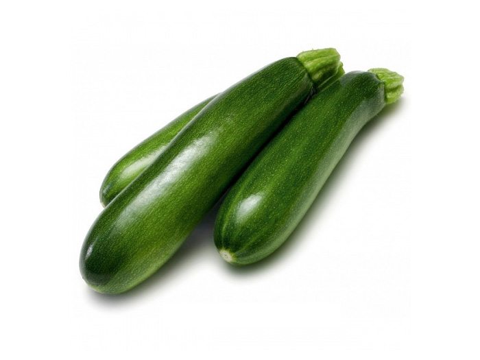

Bí Ngòi Xanh
Bí Ngòi Xanh có tên khoa học là Cucurbita Pepo, thuộc chi Bí và có một tên gọi khác nữa là bí Nhật Bản. Điều kiện tự nhiên ở Đà Lạt đặc biệt thích hợp cho sự phát triển của loại bí này nên đây là vùng đất trồng bí ngòi chủ yếu ở nước ta. Nguồn gốc của Bí Ngòi Xanh được cho là đến từ vùng đất Châu Mỹ. Bí có thân dài, thon và trơn láng, nhìn khá giống trái dưa leo nhưng to hơn, chiều dài mỗi quả bí thường từ 25 – 27cm, có màu xanh rất đẹp. Thịt bí dày với vị ngon ngọt cực thích. Loại bí này có năng suất khá cao, cho trái quanh năm, chỉ sau từ 39 – 40 ngày gieo trồng là đã có thể thu hoạch được.
Có thể nấu chín hoặc ăn sống bí ngòi đều được, hàm lượng chất dinh dưỡng cao là một giá trị cực kỳ tuyệt vời mà loại bí này mang đến cho con người. Từ quả bí ngòi chúng ta có thể chế biến được nhiều món ngon, khiến bữa cơm thêm đậm vị mà còn giúp tăng cường sức khỏe cho các thành viên trong gia đình, đặc biệt là các bé nhỏ. Cũng như những giống bí khác, bí ngòi là một loại thực phẩm có thể chế biến được thành rất nhiều món ăn ngon, đa dạng hương vị.
Những lợi ích sức khỏe khi chế biến và ăn Bí Ngòi Xanh đúng cách
* Giảm béo: Tác dụng giúp giảm cân của Bí Ngòi Xanh được đánh giá cao là do trong loại quả này có chứa rất nhiều nước mà lại có hàm lượng calo thấp. Vì thế, khi ăn bí ngòi bạn sẽ cảm thấy nhanh no và không ăn quá nhiều trong bữa ăn. Đặc biệt, nhờ có hàm lượng nước chiếm đến 95% thành phần của bí nên bí ngòi là một loại thực phẩm giúp cung cấp nước hiệu quả trong những ngày nắng nóng.
* Chống oxy hóa, chống lão hóa: Nếu bạn muốn duy trì nét thanh xuân, tươi trẻ không chỉ cho làn da mà còn cho toàn bộ cơ thể của mình thì nên đưa bí ngòi một cách khéo léo vào thực đơn trong tuần của mình. Trong Bí Ngòi Xanh có chứa lutein, beta carotene, xeta xanthin là những chất chống oxy hóa, giúp ngăn ngừa quá trình lão hóa cực kỳ hữu hiệu.
* Có lợi cho bệnh nhân tiểu đường: Với hàm lượng carbohydrate thấp và nguồn chất xơ dồi dào nên bí ngòi là loại thực phẩm cực kỳ tốt cho những bệnh nhân tiểu đường cần có chế độ dinh dưỡng cân đối, tránh được tình trạng đường huyết thay bất thường.
* Tốt cho người bệnh Gout: Do có chứa nhiều carotenoids và axit béo omega 3 nên ăn Bí Ngòi Xanh sẽ giúp hạn chế được lượng axit uric là một trong những nguyên nhân khiến tình trạng bệnh Gout thêm trầm trọng.
* Ngăn ngừa nhiều bệnh lý khác: Phòng ngừa xơ cứng động mạch, ổn định huyết áp, phòng chống còi xương, ung thư ruột kết, đau tim… Hỗ trợ điều trị tốt trong các trường hợp bị hen suyễn hay viêm xương khớp. Đặc biệt còn tốt cho mắt và giúp cải thiện, tăng cường trí nhớ.